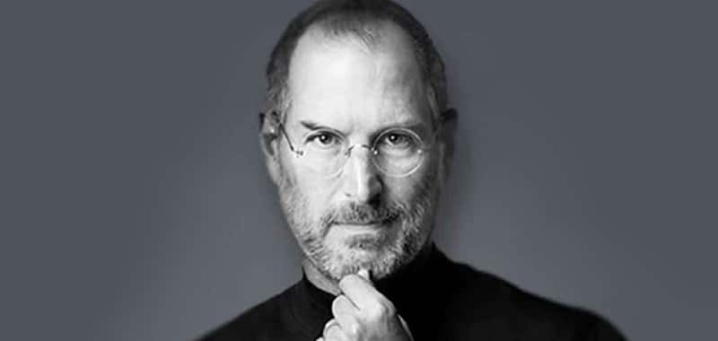

Tribute to Steve Jobs

"The people who are crazy enough to think they can change the world are the ones who do"
TIMELINE
-
Feb 24, 1995 Steven Paul Jobs is born in San Francisco to Joanne Carole Schieble and Abdulfattah Jandali.
-
1961 The Jobs family move to Mountain View Calif., part of what would later become known as Silicon Valley.
-
August 9, 2011 Apple shares edge part those of Exxon Mobil to become the most valuable U.S. company, in terms of market capitalization, at $337.17 billion.
-
August 24, 2011 Resign from Appel CEO post; becomes chairman.